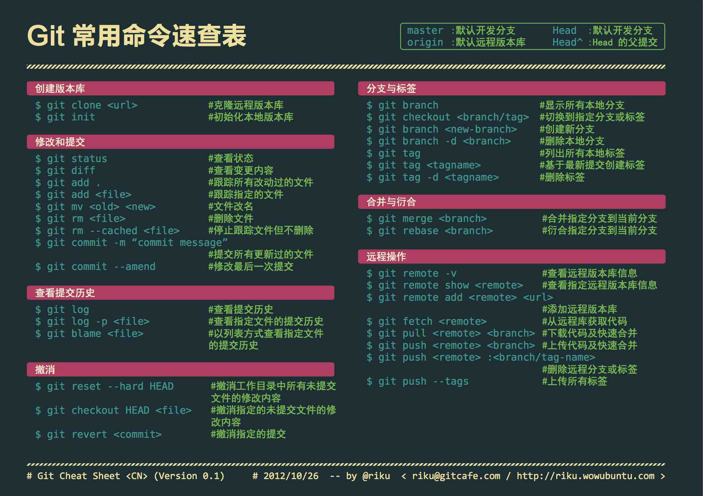
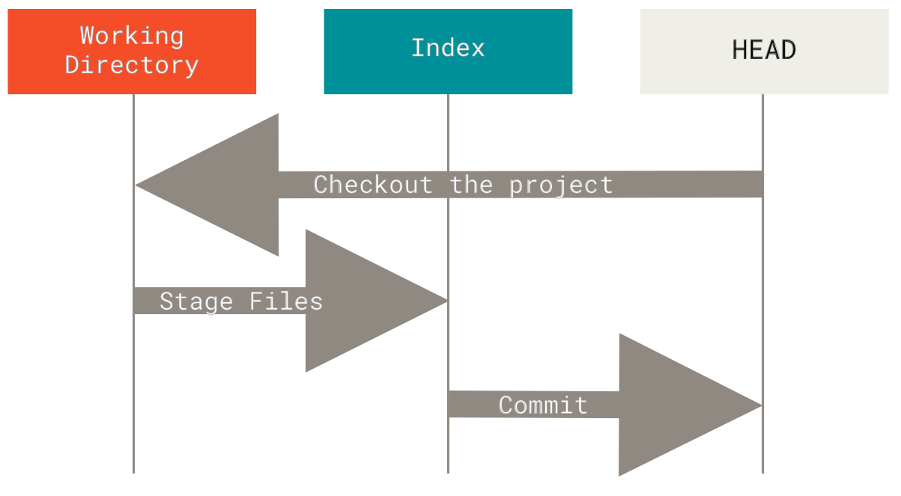

Git

Info
以下内容基于 2.X 版本.
Git 是一款版本控制系统 (Version control system, VCS). 名字的由来是项目创始人 Linus 的自嘲1, 该词在英语俚语代表 "令人讨厌的人".
配置 Git
# 设置用戶
git config --global user.name '<NAME>'
git config --global user.email '<EMAIL>'
# 设置默认主分支名称
git config --global init.defaultBranch main
# 设置 pull 模式
git config --global pull.rebase true
# 设置编辑器
git config --global core.editor 'nvim'
# 设置网络代理
git config --global http.proxy 'http://127.0.0.1:1234'
git config --global https.proxy 'http://127.0.0.1:1234'
git config --global column.ui auto
git config --global branch.sort -committerdate
# 设置命令别名
git config --global alias.co checkout
git config --global alias.br branch
git config --global alias.ci commit
git config --global alias.st status
配置 GPG 签名
gpg --list-secret-keys --keyid-format=long
git config --global user.signingkey <KEY_ID>
git config --global user.signingkey <SUB_KEY_ID>!
git config --global commit.gpgsign true
git config --global tag.gpgSign true
git config --global gpg.program <GPG_PATH>
详情请参考 GitHub Docs.
代码托管平台
以下平台提供了 Git 远程仓库托管服务:
使用平台进行对仓库托管还可以利用平台提供的相关功能, 但不应该产生依赖. 应确保项目随时可以脱离该平台并正常运作.
GitHub CLI
GitHub CLI 是 GitHub 官方提供的跨平台的命令行工具. 安装教程.
在 GitHub 因为安全问题禁用 Git 通过账户和密码登录后, 经过 GitHub CLI 配置后的 Git 可以按原样使用.
sudo pacman -S github-cli # Arch Linux
scoop install gh # Windows
gh auth login # 登录 GitHub 账号
gh auth setup-git # 配置 Git
gh extension install github/gh-copilot # 安装 Copilot 拓展
gh copilot explain "sudo apt-get" # 解释命令
gh copilot suggest "Undo the last commit" # 生成命令
暂存

| Command | New Files | Modified Files | Deleted Files | Description |
|---|---|---|---|---|
git add -A |
√ | √ | √ | Stage all files. |
git add . |
√ | √ | √ | Stage all files in current folder. |
git add --ignore-removal . |
√ | √ | × | Stage new and modified files only. |
git add -u |
× | √ | √ | Stage modified and deleted files only. |
重置
--soft: 重置HEAD.--mixed(默认): 重置HEAD和索引.--hard: 重置HEAD, 索引和工作目录.
贮藏
如果需要一个干净的工作目录 (比如切换分支), 但是当前的工作还未完成无法提交, 可以使用贮藏 (stash).
其中 git stash pop 的作用类似 git stash apply 然后 git stash drop.
更多有关贮藏的信息请参考 Pro Git 的对应章节.
提交信息
提交信息的编写方式可以参考 Conventional Commits, 里面列举了一些例子和优点.
可以借助工具 commitlint 来进行检查.
| 类型 | 描述 |
|---|---|
| refactor | 代码重构, 既不修复错误也不添加功能. |
| feat | 类型为 feat 的提交表示在代码库中新增了一个功能(这和语义化版本中的 MINOR 相对应). |
| fix | 类型为 fix 的 提交表示在代码库中修复了一个 bug(这和语义化版本中的 PATCH 相对应). |
| style | 不影响代码含义的变化(空白/格式化/缺少分号等). |
| perf | 改进性能的代码更改. |
| test | 添加确实测试或更正现有的测试. |
| build | 影响构建系统或外部依赖关系的更改. |
| docs | 只是更改文档. |
| ci | 更改持续集成文件和脚本. |
| chore | 其他不修改 src 或 test 文件. |
| revert | commit 回退. |
首字母大写的摘要 (不多于 50 个字符)
如果必要的话, 加入更详细的解释文字. 在大概 72 个字符的时候换行.
在某些情形下, 第一行被当作一封电子邮件的标题, 剩下的文本作为正文.
分隔摘要与正文的空行是必须的（除非你完全省略正文）,
如果你将两者混在一起, 那么在使用例如变基这样的工具时, 它们会生成难以阅读的输出, 让人困惑.
使用指令式的语气来编写提交信息: 使用 "Fix bug" 而非 "Fixed bug" 或 "Fixes bug".
此约定与 git merge 和 git revert 命令生成提交说明相同.
空行接着更进一步的段落.
- 标号也是可以的.
- 项目符号可以使用典型的连字符或星号, 后跟一个空格, 行之间用空行隔开, 但是可以依据不同的惯例有所不同.
- 使用悬挂式缩进.
忽略文件
不想使用 Git 进行跟踪和管理的文件可以在 .gitignore 文件中指定, 语法十分简洁易懂.
对于常见开发环境通常忽略的文件, 可以利用 gitignore.io (Web/CLI) 生成.
清空仓库
下面代码用于清空 main 分支的所有提交历史.
git checkout --orphan empty || exit 1
git branch -D main || exit 1
git add -A || exit 1
git commit -m 'feat: first commit' || exit 1
git push origin empty:main --force || exit 1
git checkout main || exit 1
git branch -D empty
git pull origin main --allow-unrelated-histories
在确认执行成功后, 可以执行 git gc 来清除无用的历史, 此举将导致之前的提交历史完全丢失.
常见错误
检查是否使用的正确的 gpg.exe. 通过下面命令指定使用的 gpg.exe: